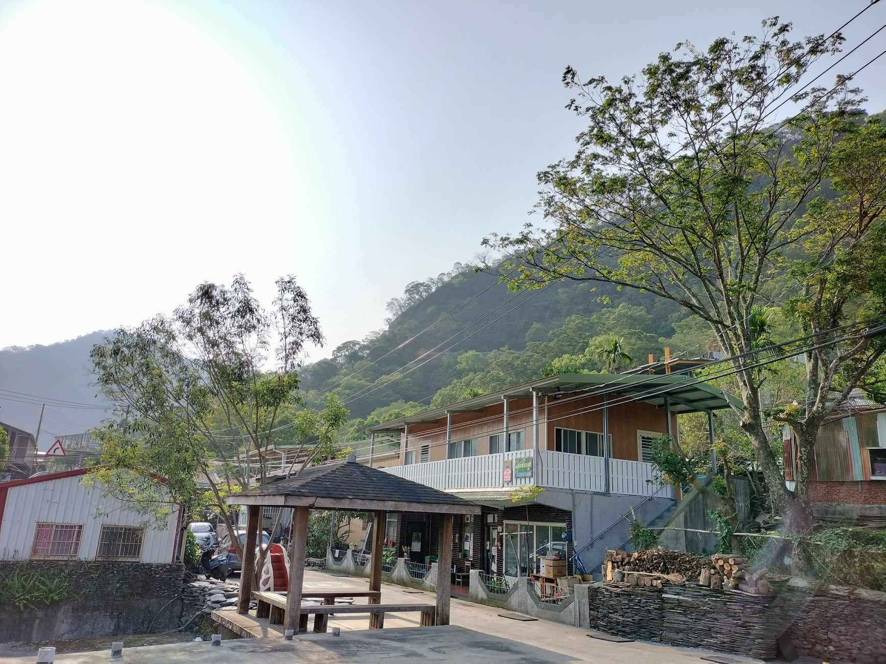

南島魯瑪社是一個以推廣原住民族語及文化為核心的教育組織，致力於建立全母語教育環境，主要針對阿美語與魯凱語進行課程設計和教材編寫。其目標是讓部落的孩子能在自己的文化語境中學習，並傳承語言與傳統價值。
南島魯瑪社的主要計畫透過編纂族語教材、培訓母語師資，以及打造符合文化特色的學習空間，現於花蓮玉里有一間「Pinanaman 河邊教室」、屏東霧台有一間「Syaalrima山上教室」。
隨著現代化和全球化的影響，台灣的原住民族語言面臨著消失的危機，許多語言的使用者逐漸減少。
隨著語言使用者的逐漸減少，台灣的多個原住民族語言正面臨消失的危機。根據最新的研究，未來20年、50年內，有些語言可能完全消失。
「在過去我們有很長一段時間，我們的舌頭是被偷走的，我的爸爸媽媽他們不可以講母語啊，會被打，自然而然，他們不想我們跟他們一樣，就也不跟我們講了，慢慢，慢慢地，大家就忘了。」
台灣原住民族語言與文化正面臨嚴重的瀕危挑戰。隨著都市化、全球化與主流語言的普及，原住民語言使用者大幅減少，多數年輕世代未能學習母語，導致語言傳承中斷。
「部落的孩子幾乎都不說母語了，即便我們試著跟用母語對話，他們聽得懂一點，但還是習慣性的用華語回答。」
聯合國將多數台灣原住民族語列為極度危險或脆弱等級，例如巴宰語在2010年最後一位使用者離世後已完全消失，其他如邵語和賽夏語也因使用者老化而瀕臨滅絕。
語言承載著文化、歷史、價值觀等，隨著語言的消失，這些也將被逐漸簡化或遺忘。雖然台灣政府自2017年起實施《原住民族語言發展法》，並透過教育與科技推動族語復振，但漢語的壓倒性優勢仍使族語使用環境受限，部分語言可能在幾十年內快速消失。
台灣政府透過《原住民族語言發展法》，推動沉浸式族語教學、族語認證計畫及語言學習中心建置，並鼓勵母語融入日常教育。然而，漢語主導地位、族語師資不足及學習環境有限，導致政策成效受限，語言流失速度仍快於復振。社會對族語的應用頻率偏低，阻礙學習者實踐語言。
要改變現況，需強化資源投入，讓族語教育透過日常實踐，提升語言的使用和認同。
所以⋯⋯重拾語言，重建屬於原住民族自己的教育
南島魯瑪社是一個以推廣原住民族語及文化為核心的教育組織，致力於建立全母語教育環境，主要針對阿美語與魯凱語進行課程設計和教材編寫。其目標是讓部落的孩子能在自己的文化語境中學習，並傳承語言與傳統價值。
南島魯瑪社的主要計畫透過編纂族語教材、培訓母語師資，以及打造符合文化特色的學習空間，現於花蓮玉里有一間「Pinanaman 河邊教室」、屏東霧台有一間「Syaalrima山上教室」。

Pinanaman意指「學習的地方，」2019年，在花蓮織羅部落秀姑巒溪畔成立的Pinanaman河邊教室。 讓孩子在全阿美語的環境中生活，用自己的語言聽自己的故事，用自己的語言學習自己的文化。

Syaalrima意指一個人擁有什麼工具、什麼工作都會做的雙手，是能造福整個部落。2022年，屏東霧台的神山部落，成立了全魯凱語的「Syaalrima山裏有個族語教室」。山裏教室位處神山部落之內，教室積極參與部落的公共事務，「身體在嘴巴前面」是教室的重要理念。
南島魯瑪社的教學方式非常重視文化的傳承，他們不僅專注於語言的保存，還強調通過互動式學習與實地實踐讓學生深入了解自己的族群生活方式；另外，由於家庭也扮演著重要的學習、語言文化傳承角色，因此也強調「家庭」在教室中的參與，家長會輪流為教室準備中餐，並與老師們共同討論教學方向，這種結合現代教育與傳統文化的方式，旨在讓原住民族語言和文化在現代社會中得以持續發展。
在台灣，教育面臨著許多挑戰，包括課程的設計、教學資源的分配、以及學習環境的改善等。隨著科技的發展，傳統的教育模式也在不斷進化...
訪談：南島魯瑪社課本專員Tjuku
在多元性不足的教育環境中，原住民學生經常會被視為「弱勢」...
曾經有想過自己讀的課本形塑得是誰的想像呢？國小、國中、高中，一路走在主流教育的道路上，曾對教科書抱有任何懷疑嗎？...
曾經有位kama（父執輩統稱）說過，教科書中提到牡丹社事件時，都是日軍視角進攻部落的那張照片，對於事件的描述也都不是當地排灣族人所認知的歷史...


原住民族的語言中，少有能直翻「教育」的詞，以排灣語舉例，「masan caucaw（成而為人）」最能體現「教育」的語彙。在成為人的過程中，每個年齡層、性別都有自己要學習的事情，透過每個階段能力習得以成為「真正的人」，就像是我們國小、國中、高中按照課綱完成學業。
但是，這個教育被單一化、被拿來作為升學工具的世代當中，不同文化間的「我們」都逐漸忘了過去是如何「成為人」的。；接受相同教育脈絡， 讓大家都站在相同的「漢文化本位教育」視角，原本身為一個「魯凱人」、 「阿美人」是如何看世界的，這些觀點漸漸被淡忘。
南島魯瑪社Pinanaman河邊教室、Syaalrima山裏教室希望能夠慢慢找回原來「成為人」的方式， 創造有別於一般的課本，是孩子在部落中，眼睛看見、身體感受到的世界，而非使用翻譯的語文教材， 除了學習自己的語言外，更是理解在語言背後的思考及文化底蘊。在這片土地上，一起成為說故事的人。


「讓我們的孩子有『文化自信』，對於自己身為一個Pangcah（花蓮阿美族人自稱）
或魯凱人為驕傲！
我們不要在是那些被特別匡出來的人。可以勇敢地說自己的話，做自己的主人。」南島魯瑪社執行長說道。
「文化自信」指認識並理解自己所屬的文化背景後，對這種文化價值與特徵的深切認同與自信心。
文化自信可以幫助個體在社會環境中找到自我定位，這不僅僅是對自己文化的驕傲，更是對其在當代社會中持續存在和發展的信任。
「在南島魯瑪社的募款活動中，經常有人提出這樣的疑問：「孩子在這樣的學校會有競爭力嗎？」
南島魯瑪社就是希望能打破菁英主義的框架，
讓孩子學習母語，不只是單純的語言學習，而是希望能賦予孩子一個深具文化根基的視野，
透過實踐來感受語言背後深厚的文化意涵，以自身的身份與觀點理解並參與這個世界。
這種教育方式強調身體實踐，例如：參與部落事務、參與狩獵或編織活動，
這些實踐讓孩子更理解語言、文化背後的意義，能以族群世界觀來思考問題。在當代教育逐漸單一化的趨勢下，
孩子的觀點很容易被限制於某一種框架之內，
而南島魯瑪社的使命正是希望打破這樣的限制，讓孩子能站在自身文化的立場來看世界。
然而，這並不意味著南島魯瑪社忽視主流教育的重要性。
在學校裡，孩子仍然會學習國語、英語、數學和社會等科目，
但這些知識的傳遞並不是單純地依循主流的框架，
而是結合自身的文化視角。例如，過去魯凱族在收成小米時，是以4、8、
12等為一數算小米，
孩子在學習數學時，可以透過過去數小米的方式，理解數學的意義；
在學習自然時，則能以在田間、山上的看見為基礎來延伸思考
。
南島魯瑪社相信，這樣的教育模式不僅不會削弱孩子的競爭力，
反而能讓他們在未來的社會中展現更豐富的想像力與創造力。
他們能夠擁有雙重的視角：一方面能融入主流社會，另一方面也能自信地傳承和運用自身的文化智慧。
在一個多元價值越發受到重視的時代，這樣的能力將成為他們的核心優勢。
因此，南島魯瑪社所培養的孩子，並非缺乏競爭力，而是具備了一種更為寬廣的視野和深度。
他們不僅是未來的競爭者，更是連結文化與社會的橋梁。
他們將帶著自己的故事與世界對話，為這片土地與全球社會創造更多可能性。
訪談：山上教室老師 Lavakaw
「每天的我們，藉著族語帶孩子生活學習著，與孩子的一動一問一答，是那麼的魯凱。」
每日帶孩子一起練習洗衣、曬衣、摺衣；練習洗菜、折菜、切菜；練習遇到長輩要用眼睛注視地打招呼； 練習飯前用魯凱語禱告；練習整理、爬樹、玩耍；練習聽說讀寫魯凱字......，這就是孩子每天的日常教育， 練習成為一個魯凱族「好的樣子」！ 從魯凱語當中理解，在動作中練習做到後，再用說出來的，那既是自信，也才是魯凱人的族語。
訪談：山上教室老師cemeceme
「在市區教幼兒園19年，總覺得課程少些了什麼？雖熟習了制式學校的教學，但常感到被架框似的，無法跳脫一般照本宣科的方式。」
到了 Syaalrima 山上魯凱教室，帶孩子們在大自然中，用自己的語言與部落互動、學習，在各個婚喪喜慶中，那原有的純粹、質樸的氣息與文化厚度，彷彿能看見魯凱的樣貌慢慢生長在孩子們身上，自主學習的能力、樂於分享的態度，願意給予身邊的人們關懷、主動協助與服務群體，一切都是自然而然的流露，讓我深深被觸動。 孩子們的學習都積極、主動，也自然地將所學帶入家庭、整個部落、所有的生活環節；生活就是學習，不依賴課本或教具，整個部落就是我們的教室，社區群體的大小事、緊密連結的大自然環境，就是教室的活書，無論語言、自然、數學、美術勞作、生活自理、人際關係……知識實務式地進入學習內容，涵蓋在生活中，回歸部落、用自己的語言來做教育。
ame(父執輩統稱)去田裡工作了，今天是禮拜六，教室不用上課，
Deresai在沒事的時候，不是選擇騎單車、畫畫、溜直排輪，
而是默默地坐在教室裡面編繩。
這次的編法叫做karasingi，
kaingu（奶奶）先把顏色分好、綁線頭，
Deresai再自己靜靜地練習karasingi，
ame休息回教室時，驚訝的看見編繩的Deresai，像是看見了kaingu們農忙完休息時編織的影子。
Kabalelradhane cekeleli, taikaikaiyaneli kibubulru.
ikai angangade, drakerale, kadalranane,
takibulrubulrwane, ikaikidruanga.
yakay ku kaingu、umu、ina,、ama,
ku wabububulru naiyane, lamusakenenay linyane.
「神山」，是我的部落，也是我上課學習的地方。
在田裡，在河流，在路上，在教室，
任何地方都會是我們學習的地方。
有奶奶爺爺、媽媽爸爸們，
都是會教育到我們的人，是我們尊敬的長輩。
LUMA十分重視的「在地化」，倘若課文內容說道「我們水邊玩耍」， 河邊教室和山上教室孩子的所看見的就大有不同，山上看見的會是較為狹窄、周遭佈滿大石頭的溪流， 河邊教室則是平緩、廣闊的河流，設計師也會因為自己的生命經驗而有不同的想像。 怎麼讓設計師也能一起感受山上野生動物警惕的神韻、wadrapulu（魚藤捕魚）時一大群魚暫時昏厥平躺溪流中的壯觀、寒冬裡部落籠罩在雲瀑中的景象⋯⋯
溝通課本內容過程中，有光是對於「引流打魚藤」、「溪流走向」、「魚該溪流的何處昏厥」， 就來來回回修正了許多次，才有了最接近的模樣。製作課本的過程當中，許多的精神與體力都在於不同的生命經驗、 靈魂的交流之上，我們帶著設計師們一起到山上教室，呼吸山上的空氣、感受魯凱人的生活，能透過老師寫出的文字、設計師畫出的圖像， 感受魯瑪課本中的在地靈魂。

長輩經驗與智慧蘊藏著無盡的知識，是最生動的老師，傳授傳統技藝、 文化故事與生活智慧。透過全母語教育與身體力行，孩子不僅在自然中成長， 更從長輩身上汲取文化的根與魂，找到身為「魯凱人」的自信，將這片土地的智慧延續至未來。